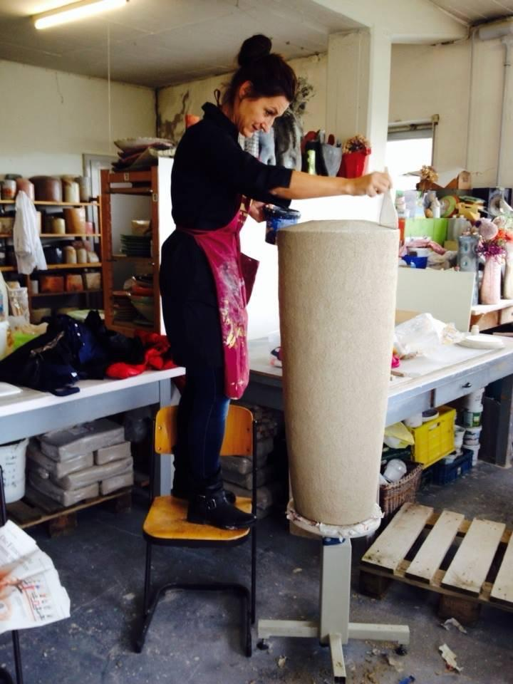

Über mich

Ich denke mit den Händen. Form, Material und Experiment sind für mich kein Gegensatz, sondern ein Gespräch, das ich seit meiner Kindheit führe.
Mit der Keramik habe ich als Kind begonnen. Man glaubt es kaum: Meine Handarbeitslehrerin Berta Schmid war für mich eine Schlüsselfigur. Trotz bayerischer Strenge und eines konservativen Systems, in dem sie selbst gefangen war, hat sie mich aufgeweckt und ermutigt, gerade dann weiterzumachen, wenn etwas schiefging, und nicht den Glauben zu verlieren, dass ich etwas kann. Diese Haltung begleitet mich bis heute.
Über die Jahre habe ich vieles ausprobiert, verworfen und neu begonnen und war bei vielen Meistern und Könnern in der Lehre. Heute arbeite ich vor allem an keramischen Skulpturen: tierähnliche Wesen, die durch Haltung und Ausdruck eine eigene Persönlichkeit gewinnen. Rauchbrand in der Keramik und Abstraktion im Materialmix in der Malerei geben meinen Arbeiten Oberflächen, die ich nie ganz kontrolliere. Genau das finde ich spannend.
In den 2000er-Jahren habe ich in meiner Münchner Werkstatt Kurse für Jugendliche und Erwachsene gegeben und an regionalen Ausstellungen und Kunsthandwerkermärkten teilgenommen.
Heute arbeite ich in meinem Roten Atelier im Chiemgau. Hier entsteht, was in den Händen beginnt.